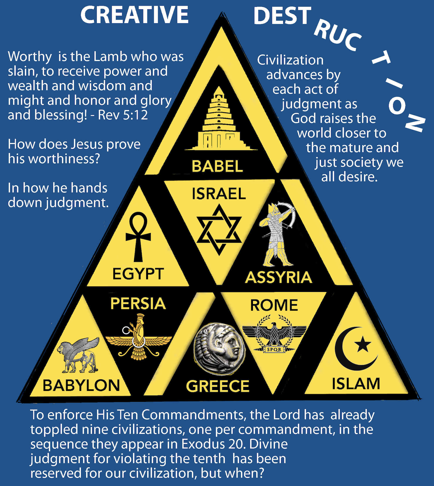

Empire Clocks
Published on 2024-07-01

Empire Clocks follow a series of empires, each of different longevity. They do not usually contain quantitative measures of how long each empire will last. In Scripture, empires are symbolized in many ways:
- by name (Egypt, Assyria, Babylon, Greece, Rome, etc)
- as beasts (lion, bear, leopard, goat, wolves, eagle, sea serpent, etc) like in Daniel 7
- as metals (gold, silver, bronze, iron) like in Daniel 2
- by military insignia (eagle, boar, moon and stars, etc)
- by vegetation (specific tree or bush, like fig tree, olive tree or grapevine) like in Judges 9
The two most common designations seem to be as beasts or metals, each prominently featured in Daniel. References to trees and other growing things show up in Judges, like in Jotham's prophecy about the trees of the forest choosing a ruler in Judges 9. Each category of symbol captures a different dimension of empire. For example, contrast the dignified pride of the lion (Babylon) with the savage efficiency of a pack of wolves (Rome). Rome would ultimately split into pieces (the European colonial empires), but those pieces would alternately cooperate or collide, making them deadly. So the metal is the glory or splendor of the kingdom, the animal its behavior, and the plant says something about its fruit.
The Metals. Understanding the nature of the metals is not something for which you look to Daniel. As with most prophecies, important background is given in the Law of Moses. The progression found in Daniel is gold to silver to bronze to iron. That progression first shows up in Numbers, concerning the spoils of war:
Then Eleazar the priest said to the men in the army
who had gone to battle: “This is the statute of the law
that the Lord has commanded Moses:
only the gold, the silver, the bronze, the iron,
the tin, and the lead, everything that can stand the fire,
you shall pass through the fire, and it shall be clean.
Nevertheless, it shall also be purified with the water for impurity.
And whatever cannot stand the fire, you shall pass through the water.
- Numbers 31:21-23
When the Israelites captured spoils, they needed to be purified of the uncleanness of their former owners. Captured items were either to be burned in fire or washed in water. If you take the words of Numbers and of Daniel together, the full meaning becomes clear. The empires that would claim Israel as spoils of war would one day be conquered by it. The fire of purification symbolizes God's judgment of each empire. Defeat will one day be swallowed up in victory. However, the judgment against each empire is not utter destruction. Something of value survives the fire. Could it be the Gentile Church?
In Daniel's two main lists, by animal and by metal, the progression is from strong to weak (lion to wolf) and precious to common (from gold to iron). The irony is that Rome, represented by the weakest symbols, lasted longest and proved more powerful than the others. (Technically, Daniel likens Rome not to wolves but in 7:7 to a beast "terrifying and dreadful and exceedingly strong. It had great iron teeth; it devoured and broke in pieces and stamped what was left with its feet." It is by matching lists of beasts, their sequence and other traits as found in the other prophets that we can confidently say that the terrifying beast was "the evening wolves", as in Habakkuk 1:8 and Zephaniah 3:3.) Daniel tells us that there is something different about this terrible beast. It is the only beast whose animal nature and metal are blended in the same creature, as iron teeth.
A given symbol usually refers to the same empire across Bible books, but there are exceptions. The lion and eagle have been the symbols for many empires, so additional details from the text are needed to make a proper identification. For example, the eagle can mean Rome, Byzantium or the United States. The lion can mean Egypt (as the lion was a symbol of Pharaoh), the tribe of Judah, Babylon or the British Empire.
The Main Sequence. The Bible has prophecies about many empires, but not all appear in prophetic clocks. There seems to be a main sequence of ten empires that appear in many Empire Clocks, stretching all the way from Babel to Leviathan, the last empire. The defining feature of these main empires is that most captured Jerusalem (as asserted by Ellis Skolfield). The only exceptions are Babel, Egypt and Assyria. Babel (possibly the Akkadian Empire) likely possessed as one of its territories the future location of Jerusalem. Egypt may have held the site of Jerusalem from time to time, but more importantly held the Hebrews as slaves. As for Assyria, it captured and deported Israel, but merely made Judah a tribute-paying vassal.
Most Empire Clocks include a subset of the empires; only one that I have discovered references all ten; it is found in Job. The illustration at the top of this article shows the first nine empires, from Babel to Islam. The tenth is Leviathan, which along with its companion, Behemoth, has not yet arisen.
Why is it useful to learn about these empires and the symbols used to refer to them? First, they pop up in the words of most of the prophets. For example, both Zephaniah (in 3:3) and Ezekiel (in 22:25-27) mention lions and wolves. Since the lion was Babylon (which came first) and the wolves Rome (which came last in Daniel's list), that pair collectively refers to all four of Daniel's beasts, thus they refer to all human empires. Understanding the animal references helps explain the meaning of the text.
Another reason is to learn humility while also glorifying God. Many people slander Christ and his church over the issue of European colonialism. Christians spread the gospel to the ends of the earth while simultaneously enriching their nations at the expense of the third world peoples. The article 153 and the Fifth Trumpet explains a prophecy from Revelation about locusts from the pit of Hell. It demonstrates that the locusts were the Christian empires. They were sent by God to exact judgment upon all the nations of the world (which they did) but then were judged and their power stripped. Thus the Christian empires were agents of God's just wrath against the earth and the subjects of God's wrath for overstepping their authority and seeking their own gain instead of God's glory. Part of the proof was the identification of the British Empire with the lion, its national symbol. So the behavior of those colonial empires does not refute the existence of God or the truth of the Bible, it affirms it!
1
Dream of a Statue
- Bible book: Daniel 2
- Defined in: Peace, like Solomon Never Knew
- Chapter: Fame is Purposely Futile
- Timespan: 605 BC–1453 AD
- Intervals: 4
- Period: Irregular
Notable facts:
In Daniel 2, the prophet interprets King Nebuchadnezzar's dream of a statue. The first miracle was that God revealed the dream to Daniel. You see, the king was on to the shenanigans of his court's wise men. He would not trust their interpretation of his dream unless they could also tell him what the dream was, which would be impossible unless they really derived their wisdom from God. Thus it would be impossible for anyone to fool him with a made up interpretation. This is the dream as Daniel related it:
“You saw, O king, and behold, a great image.
This image, mighty and of exceeding brightness, stood before you,
and its appearance was frightening.
The head of this image was of fine gold,
its chest and arms of silver,
its middle and thighs of bronze,
its legs of iron, its feet partly of iron and partly of clay.
As you looked, a stone was cut out by no human hand,
and it struck the image on its feet of iron and clay,
and broke them in pieces.
Then the iron, the clay, the bronze, the silver, and the gold,
all together were broken in pieces, and became like
the chaff of the summer threshing floors;
and the wind carried them away, so that not a trace of them
could be found. But the stone that struck the image
became a great mountain and filled the whole earth.
- Daniel 2: 31-35
Daniel goes on to explain that each part of the statue represented a different empire, each arising in succession and conquering the one before it. The head of gold was Nebuchadnezzar himself, hence represented Babylon. The most common understanding among conservative scholars is that the full list of empires given in this dream is:
- Babylon (the head of gold)
- Medo-Persia (the chest and arms of silver)
- Greece (the middle and thighs of bronze)
- Rome (the legs of iron, with one leg as the Western Roman Empire and the other as Byzantium to the east)
- Many European kingdoms that split off from Rome (the feet and toes of iron and clay)
The prophecy notes that the fourth empire, Rome, would split in two, then at a time when travel and knowledge greatly increased, into ten pieces, the European Colonial empires. Other prophecies in Daniel go into detail about the third empire, Greece. They predicted that it would splinter into four kingdoms, which happened after Alexander the Great died and his generals divided his empire amongst themselves.
The stone that would smash the fourth empire is the church, which came into possession of the Roman Empire in 380 AD with the issuing of the Edict of Thessalonica.
2
Seven Kingdoms
- Bible book: Revelation 17:9-10
- Defined in: Peace, like Solomon Never Knew
- Chapters: The Final Countdown, Timeless?
- Timespan: 1000 BC–2280 AD
- Intervals: 7
- Period: variable
Notable facts:
In Revelation, one of the angels holding one of the seven bowls of judgment speaks to John about a scarlet beast with seven heads and explains part of the vision to him.
This calls for a mind with wisdom:
the seven heads are seven mountains on which
the woman is seated; they are also seven kings,
five of whom have fallen, one is, the other has not yet come,
and when he does come he must remain only a little while.
As for the beast that was and is not,
it is an eighth but it belongs to the seven,
and it goes to destruction.
- Revelation 17:9-10
The countdown to the final beastly empires (Behemoth and Leviathan) passes through seven previous “normal” kingdoms: Israel, Assyria, Babylon, Medo-Persia, Greece (Alexander the Great), Rome, and the Islamic Empires. Revelation 17 does not name the empires, but by comparison with Daniel and history we can identify several.
By saying "five of whom have fallen", we know that the first five empires fell before the life of John. Daniel gave us three empires before Rome on his list: Babylon, Medo-Persia and Greece. What were the other two? According to Ellis Skolfield, those two were Israel and Assyria. Israel began as God's chosen people, but then half broke off and became a pagan beast. Assyria was the nation that destroyed the northern kingdom of Israel and Babylon later conquered Assyria.
By calling the sixth empire "one is", we know that it must be an empire in existence at the time when John wrote Revelation. The empire at that time that occupied Jerusalem and all the Promised Land was Rome, so it is the sixth head on the beast.
After the sixth empire but before Behemoth and Leviathan, the beasts from the land and sea of Revelation 13, a seventh empire would arise. Only three civilizations have occupied Jerusalem since Rome: the Islamic Caliphates (including the Ottoman Empire), the Christian Crusaders, and the British Empire. Since the Islamic forces held it for the majority of that time and the other two were ostensibly Christian, hence related to the stone that was cut by divine hands, that tells us that the seventh head of the beast was Islam.
For a few fascinating details about this clock, read the article Timeless?. It shows that the duration of the seventh empire’s occupation of Jerusalem was prophesied to the exact number of years. Such details cement the idea that the seventh head was Islam.
3
Job's Empire Clock
- Bible book: Job
- Defined in: Plague, Precept, Prophet, Peace
- Chapters: Job: The Course of Empires, The Meaning of the Beasts of Job
- Timespan: circa 2200 BC–2280 AD
- Intervals: 10
- Period: variable
While writing Job Rises, I did not want to delve deep into the words of Job's three friends, Eliphaz, Bildad and Zophar. In the end, God chastised them for not speaking correctly about Him. Why should I spend time analyzing their lies? However, Shanshan, a member of my congregation studying at seminary, had read an article about the distinct personalities of the three friends. She found the exercise useful. I reluctantly dug into their words and it helped me better understand Job's responses. A few years later, I found great value in their words. That is the mystery of negative theology. We best learn certain pieces of the truth when confronted with identifiable lies.
The three friends charged Job with an unidentified sin. God was judging Job for this sin, so he needed to repent otherwise worse things would happen to him. Their words were heavy on God's judgment but light on God's grace and forgiveness. Their words constitute a massive Emotional Riddle. With emotional riddles, the emotions triggered by the text push you away. They cloud your mind and prevent you from tackling the words in a dispassionate way. In my case, the friends' unfair and groundless charges against Job made me angry. I did not want to listen to them. Wasting weeks to scrutinize their arguments and follow their logic was anathema. Partly, the problem was that some of their attacks hit close to home. They were attacking me, my salvation, and denying God's love and forgiveness.
That was before I found a few true prophecies in their "lies". You see, the friends were wrong about God and wrong about Job, but they were not wrong about the wicked kingdoms of this earth. Somewhere along the line I got the crazy idea that their bleak and damning messages matched darker times in history, while Job's speeches matched brighter times. After finding a few good matches to history, I did a deep dive and found that Job conceals an Empire Clock.
Every time one of Job's friends speaks, they utter condemnation against another world empire for breaking a different one of God's Ten Commandments. Add to those eight speeches Satan's initial condemnation in the early chapters and God's words about Behemoth and Leviathan in His speech, and you have prophecies of God's judgment of ten kingdoms for violating all Ten Commandments, one by one. The grandeur and yet simplicity of this powerful demonstration of God's justice, wrath and sovereignty over all of human history stunned me. Why? Not because God cannot do such a thing, not because it is so complicated an idea to understand, but because who has ever been able to comprehend history in the light of God's Word to such an extent? The idea seems too good to be true. Surely history could not possibly be so neat and tidy as all that?
Many who write about Job speak about how we must settle for waiting, not justice in this world. We must wait until Heaven for perfect justice to be implemented and the guilty to be punished. I was once among those who view the world that way. Such a view implies a state of affairs that concedes too much. Yes, perfect justice will not arrive until Jesus returns and people receive their final reward or condemnation. Yet God does rain down justice at regular intervals. He does bring down empires and uphold His commandments explicitly, concretely and comprehensively.
Here are the relevant chapters from Plague, Precept, Prophet, Peace, reproduced so that you can see the magnificent evidence that Job's friends prophesied thousands of years of God's establishment of justice in the world:
4
Habakkuk's Clock
- Bible book: Habakkuk
- Defined in: Plague, Precept, Prophet, Peace
- Chapter: Answering Habakkuk
- Timespan: 605 BC-1917 AD
- Intervals: 5
- Period: variable
Habakkuk revisits the same five empires in section after section of his prophecy, each time adding additional details to the picture. These are the empires:
- Babylon
- Medo-Persia
- Greece (Alexander the Great and successors)
- Rome
- Islamic Empires
- Analysis of Habakkuk 1:1-4. Habakkuk puts questions to God.
- Analysis of Habakkuk 1:5-11. God doubles down: the bitter and hasty Chaldeans are coming
- Analysis of Habakkuk 1:12-2:1. Habakkuk complains with three threes about innocent people caught in a cruel net.
- Analysis of Habakkuk 2:2-5. God offers a fourfold assurance to the faithful.
- Analysis of Habakkuk 2:6-20. Five woes are pronounced against lawbreakers.
- Analysis of Habakkuk 3:1-16. Prophecy of God's coming six-ply war against the wicked.
- Analysis of Habakkuk 3:17-19. Six laments over a barren harvest and a seventh praise of God in faith.
- Revisits the sixth section of Habakkuk with a final insight into God's battle plan.